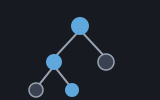
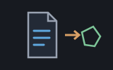
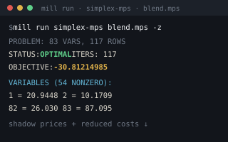

mip answers the same kind of question
simplex does — what is the cheapest way to meet all
of these requirements? — with one extra condition that changes everything:
some of the answers have to be whole numbers. You cannot buy 1.6 lorries, hire
2.4 people, or open half a depot. You hand it a linear program and a list of
which variables must come out whole, and it hands back the best whole answer,
along with how much work finding it took. Inside, it does what every solver
does with this problem: it solves the ordinary linear program, and when the
answer comes back fractional it splits the problem in two — "what if this
variable is at most 1?" and "what if it's at least 2?" — and works on both.
That is branch and bound, and it is the reason the machine reports a
node count as well as an answer.
Once the simplex method made linear programs routine in the 1950s, the integer case immediately became the sore spot. People noticed straight away that the answers to real planning problems came out in fractions, and that rounding was not a fix. The first serious attack came from Ralph Gomory in 1958, with cutting planes: solve the relaxation, and when the answer is fractional, derive a new constraint that every whole answer satisfies but this fractional one does not, add it, and solve again — shaving the fractional corners off the shape until a corner of what remains is whole. It is beautiful, and in the arithmetic of the day it was fragile.
The method that stuck came from Ailsa Land and Alison Doig at the London School of Economics in 1960, and it is disarmingly simple. If the relaxation says a variable should be 2.4, then in any whole answer that variable is either 2 or less, or 3 or more. Those two cases cover everything and overlap nowhere, so make two new problems, one with each extra condition, and solve them both. Each may split again. What stops this exploding is the second half of the name: bound. Every relaxation's answer is a floor on what any whole answer beneath it can achieve — a branch whose relaxation already costs more than the best whole answer you have already found cannot contain anything better, so it is abandoned unexamined. The better your current answer, the more of the tree you never look at.
Land and Doig's paper was titled "An Automatic Method of Solving Discrete Programming Problems", and the method it describes is still, sixty-odd years later, the skeleton of every commercial integer solver on the market. What those solvers add is furniture: cleverer choices of which variable to split on, cutting planes as a supplement rather than a replacement, presolve passes that shrink the problem first, and warm starts so each child re-uses its parent's work. None of that changes the shape. This machine is the skeleton without the furniture — depth-first, split the most fractional variable, take the lower branch first, and re-solve each node from scratch.
Whole numbers are not a technicality; they are usually the whole point. The
moment a decision is yes or no — build this depot or don't, take this
contract or don't — it is a variable that can only be 0 or 1, and a linear
program will happily hand you 0.37 of it, which means nothing. The moment
something is sold in units — bales, lorries, machines, shifts — a fractional
answer is a plan nobody can carry out. And the fractional answer is not merely
unusable; it can point at the wrong plan entirely. The
bales example shipped with the
simplex mill is built to show that: its relaxation says to take all of the
cheap-looking job lot and a fraction of a bale, and the actual best whole
answer takes no job lot at all. Rounding the fractional answer gives a worse
plan, and rounding it the obvious way gives an illegal one. Reach for
mip whenever some of your unknowns are counts or choices rather
than quantities — and expect it to take longer than the plain
simplex, because it is solving many linear programs
rather than one.
A MipProblem is a linear program — a
SpProblem, the sparse form — plus a list of which
variables must be whole, given by their 1-based positions. Everything else is
the same frame the simplex machine states: minimise
Costs . x subject to A x >= Rhs, with no variable
going negative.
Include "sparse.shoddy"
Include "simplex.shoddy"
Include "mip.shoddy"
Def Main()
' Buy at least 10 tonnes. A bale is 6 tonnes for 5, B is 4 for 4.
' maximize is minimize with the signs flipped:
' minimize 5a + 4b s.t. 6a + 4b >= 10, a and b whole
Let lp = SpProblem(ToArray({ 5, 4 }),
SpFromEnts(1, 2, { SpEnt(1, 1, 6), SpEnt(1, 2, 4) }),
ToArray({ 10 }))
Print(Cost(SpOptimize(lp))) ' 8.333... — one and two thirds of A
Let ms = MipOptimize(MipProblem(lp, { 1, 2 }))
Print(Status(ms)) ' OPTIMAL
Print(Cost(ms)) ' 9 — one of each, costing more
Print(Nodes(ms)) ' how many little problems it solvedA few things worth remembering:
Status, and note there are five.
"OPTIMAL" with an answer; "INFEASIBLE" when nothing
whole fits (which can happen even when the relaxation solves perfectly well —
half of a thing may be possible where none and one both are not);
"UNBOUNDED-OR-INFEASIBLE" passed straight up from a relaxation that
proves nothing; and "MAXITER" or "MAXNODES" when a
node LP or the search itself hits its cap. Only the first carries numbers you
should read.Nodes and Iterations are the cost, and
they are worth watching. Nodes counts the little problems
solved; Iterations adds up the simplex pivots across all of them.
A search that balloons is telling you the bound isn't biting — often because
the relaxation is a long way below anything achievable.MipSolution, and that
is deliberate. See below — and use MipFixed.BOUNDS section, and it costs one stored number.MipFixed existsThe simplex machine hands back shadow prices — how much the answer moves per unit of each requirement — and they are one of the most useful things it produces. This machine does not, and refusing to produce them is the honest choice rather than a gap. Shadow prices come out of the smooth geometry of a linear program, and an integer problem has no such geometry: nudge a requirement by a little and the best whole answer typically does not move at all, and then jumps. The duals of whichever node happened to finish last are the sensitivities of that node's linear program, not of your integer problem, and reporting them would be a confident answer to a question nobody asked.
What is well defined, and what people actually want, is: given the
decisions the search made, how sensitive is the rest? Pin every integer
variable at the value it came out with, and what remains is an ordinary linear
program with real shadow prices. MipFixed builds that problem —
each pinned variable becomes a pair of one-number rows, which is nearly free in
the sparse form — and you solve it with SpOptimize like any
other.
Let fixed = MipFixed(mp, ms) ' the integers pinned where the search left them
Let fs = SpOptimize(fixed)
Print(DualPrices(fs)) ' honest prices, given those decisionsYou don't need any of this to use the machine — it's here for the curious.
The search is a single self-recursive word.
MipSearch solves the node's relaxation with
SpOptimize, decides what to do with the answer, and — if it has to
split — calls itself for the lower branch and then again for the upper one.
The second of those calls is in tail position, which the compiler turns into a
loop, so what is actually held on the stack is the depth of the tree
rather than the number of nodes in it. Threaded through the whole walk is one
record: the best whole answer so far, the running counts, and a slot saying
whether something has stopped the search.
Which variable, and which branch first. The variable chosen is the one standing furthest from a whole number — the most fractional rule, on the reasoning that a variable at 2.5 is the one the relaxation is least sure about, and a tie goes to the lowest index so the walk is repeatable. The lower branch is taken first. Both are plain choices, not deductions: other rules exist, and they trade one problem's tree size for another's.
Why re-solving each node from scratch is affordable here. Textbook advice is to warm-start each child from its parent's basis, because re-solving a grown problem from nothing looks wasteful. The argument is at its weakest in this machine, for a specific reason. The simplex underneath solves the dual, so the matrix it inverts is as wide as the variable count and takes no notice of how many constraints there are. A branch adds a constraint. In the dual that is one more column — and a single-number one at that — so a node forty levels deep pivots on exactly the same size of inverse as the root did, and the sparse form appends that column by sharing every column already there. Depth is nearly free; it is the number of nodes that costs, and warm starting would not change that.
Pruning, and the one subtlety in it. A node is abandoned
when its relaxation is infeasible, or when its cost has already reached the
best whole answer in hand. There is a third case worth explaining: a node whose
relaxation comes back "UNBOUNDED-OR-INFEASIBLE". At the root that
is the honest answer and it is passed straight out. Below the root it is
pruned, and safely — a child's feasible region sits inside its parent's, and
the parent had an optimum, so the child cannot be unbounded. It is empty, and
empty is a prune.
The surface, plus the MipProblem and MipSolution types
| Word | Description |
|---|---|
| MipProblem(Prob, Ints) | A linear program that has whole numbers
in it. Prob is a SpProblem —
Costs, a sparse constraint matrix, and Rhs.
Ints is a list of 1-based variable positions that must come out
whole; an empty list is simply a linear program. |
| MipSolution(Status, X, Cost, Nodes, Iterations) | What
MipOptimize hands back. Status is one of
"OPTIMAL", "INFEASIBLE",
"UNBOUNDED-OR-INFEASIBLE", "MAXITER" or
"MAXNODES". X is the best whole answer and
Cost its cost; Nodes is how many little problems were
solved and Iterations the simplex pivots summed across all of
them. No shadow prices — see MipFixed. |
| Word | Description |
|---|---|
| MipOptimize(mp) | Solves the MipProblem by branch and
bound and returns a MipSolution. Depth-first, splitting the most
fractional variable, lower branch first, with a node cap of 100000. Pure, with
no side effects. Stops the program if Ints names a variable that
doesn't exist. |
| MipFixed(mp, sol) | The linear program left when every integer
variable is pinned at the value sol gave it — two one-number rows
apiece. Solve it with SpOptimize and its shadow prices and reduced
costs are the sensitivity of the continuous part, given those decisions.
Refuses unless Status(sol) is "OPTIMAL": there is
nothing to pin the integers at otherwise. |
| User | How | |
|---|---|---|
 | mps | A file whose columns are
marked integer parses to a MipProblem; the plain linear-programming
words refuse such a file and name these ones instead. |
 | simplex-from-mps | Reports an
integer file's answer with its node and iteration counts, and its sensitivity
through MipFixed. |
| Machine | Why | |
|---|---|---|
| seq | Any checks the
integer list against the variables that exist. | |
| simplex | Every node is
an SpOptimize of an SpProblem, and its
Solution is what the search reads. | |
| sparse | SpAddRow
puts a branch's single number on the bottom of the matrix without disturbing
anything already in it. |